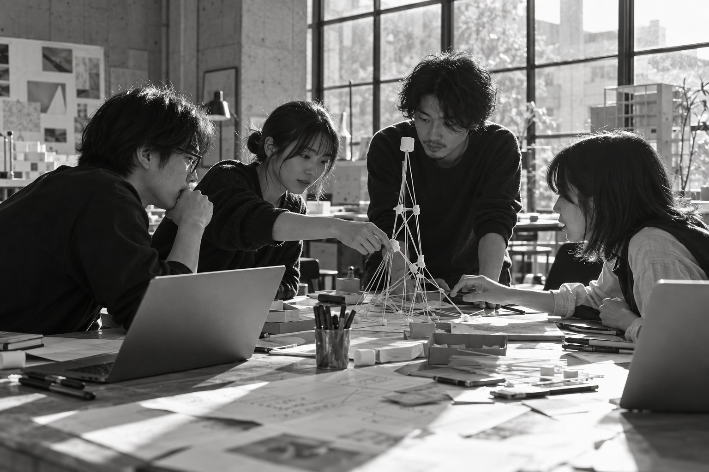

Department of Information Design
2026 Spring

つくり方を、
デザインする。
ソフトウェア開発方法論と
アジャイルワークショップ
動くものをつくる。
確かめる。話す。つくり直す。
その進め方も、デザインできる。
みんなで、よくする。
小島 弘誉
Department of Information Design
2026 Spring
まず、
ダウンロード。
待っている間に、今日の話を。
いま進めるのは、手順1〜2だけ。
リンクはSlackの授業チャンネルから。
詳しい操作は セットアップ手順書 ↗
今日、使う開発環境
Antigravity
IDE Standalone
手順1でPCの種類を確認 → 合うものを選ぶ
IDE Standalone を選ぼう。
Department of Information Design
2026 Spring
7回の授業で、
つくる力をつなぐ。
問いから始めて、仲間と形にする。
今日は、その「進め方」を学ぶ。
第4回のチーム制作へ。
ソリューション
基礎
何を解決する？
Why?開発方法論
アジャイル
どう進める？
How we workデザイン思考
ユーザー理解
誰のため？
For whom?ソリューション設計
プロトタイピング
小さく形にする
Make it!対話と問い
価値のデザイン
大切なことは？
Find valueケーススタディ
デザイン・演習
学びを組み合わせる
Connectケーススタディ
制作・成果発表
伝えて、確かめる
Share!全7回 ／ 1回につき2コマ・各100分 ※上の番号は授業の実施順です。
Department of Information Design
2026 Spring
ひとりで
つくる。
その先へ。
前回は、
「ソリューションとは何か」。
今回は、仲間とつくる
進め方を考える。
思いつく
自分で決める
自分で直す
誰が決める？
どう合わせる？
コードを書く力とは別の技術。
Department of Information Design
2026 Spring
今日は、つくり方を変えてみる。
つくって、
進め方を考える。
一言でつくる → 仕様を書いてつくる
さらに、チームでつくってみる。
方法論の違いと使い分けを説明できる。
試して、
振り返って変える。
マシュマロチャレンジを通して、
早く確かめる意味を体験する。
チームの改善を、具体的な行動にする。
Department of Information Design
2026 Spring
準備は、ひとつずつ。
ダウンロードが終わったら、手順書の3以降へ。
インストール
自分のOSの手順に沿って
ダウンロードしたファイルを開く。
入手元と内容を確認。
ログイン
個人のGoogleアカウントで。
アカウントと権限を確認する。
使えない場合があります。
日本語にする
拡張機能で「Japanese」を検索。
Microsoft製を入れて再起動。
英語のままでも大丈夫。
動かないときは、隣の画面を一緒に見よう。
操作の詳細：セットアップ手順書 ↗
Department of Information Design
2026 Spring
どこで、何をする？
VIBE-CODING
⌄ アプリのフォルダ
index.html
1日本語で書く。
できたファイルを探す。
仕様書やコードを確認する。
依頼する。直す。質問する。
作業場所を決めてから始めよう。
画面の概念図です。実際の表示・配置はバージョンや設定で変わります。
Department of Information Design
2026 Spring
準備できたら、
つくってみよう。
空のフォルダを作る。
配布ZIPを展開する。Macは starter-mac。
使うフォルダそのものを開こう。
READY?
- IDEを起動・ログインできた
- vibe-coding を開いた
- 自分のOSのZIPを展開した
日本語化は、できていればOK。
まだ途中なら、隣の人と一緒に。
Department of Information Design
2026 Spring
まず、
つくってみよう。
2人1組ですが、PCはそれぞれ使います。
同じ一言から、自分の画面でつくってください。
「グループワークで
使えるタイマーを
作ってください」
依頼は、この一文だけです。
色も、機能も、使い方も、指定はありません。
できたら、お互いの画面を見せ合おう。
同じ一言なのに、違うものができているはず。
Department of Information Design
2026 Spring
お客さんの条件は、
5つありました。
どれも一言も伝えていません。
依頼した人の頭の中にだけありました。
腕の問題ではありません。
- 013チーム分の時間を
同時に計れる - 02残り3分で
表示の色が変わる - 03一時停止と
再開ができる - 04時間を超えたら
マイナスで表示され続ける - 05リセットは
確認してから実行される
この5つが、今日でいう「受け入れ条件」です。
Department of Information Design
2026 Spring
では、お客さんとして
確認します。
講師これから5つの条件を
読み上げます。
自分の画面で ○ × を
数えてください。
- 5つ通った人 → 挙手
- 3つ以上の人 → 挙手
- 1つ以下の人 → 挙手
読み上げた条件を、書き取ろう。
条件は、最初から依頼した人の頭の中にありました。
印をつけておこう。
腕の問題ではありません。
Department of Information Design
2026 Spring
なぜ、
通らなかった？
ペアで2分 → 全体で共有。
出てきたことは、全部ホワイトボードへ。
説明できる？
何を聞いた？
「完成」だった？
もう一度作れる？
中身を説明できる？
どうなった？
Department of Information Design
2026 Spring
なぜ、
型があるのか。
ホワイトボードに出た困りごとは、
すでに解かれてきた問題です。
Department of Information Design
2026 Spring
つくり方にも、型がある。
ソフトウェア開発方法論とは、次の4つを決めた「進め方の型」です。
何をつくるか
要求を聞き、条件を書き留める。
どの順で進めるか
計画する。小さく分ける。反復する。
誰が何をやるか
役割と責任、決め方を決める。
どこまでで完成か
受け入れ条件と、完成の定義。
さっきホワイトボードに出たことは、
全部「つくり方が決まっていないと起きること」。
同じことで困った人たちが、50年以上かけて型をつくってきました。
進め方の話です。
Department of Information Design
2026 Spring
「できた」には、
2種類ある。
その機能が
満たすべき条件
例：「残り3分になったら、表示の色が変わる」
機能ごとに書く
成果物が「完成」と
呼べる共通の基準
例：「必要なテストとレビューを終え、使える状態になっている」
チーム全体で1つ決める
関係はしていますが、別のものです。
混ぜると「完成したのに使えない」が起きます。
Department of Information Design
2026 Spring
ひとりで効く型、
チームで効く型。
ひとり〜小規模で効く
今日、3限で手を動かす側
- 仕様駆動開発先に条件を書いてから作る
- テスト駆動開発先に確かめ方を決める
チームで効く
今日、3限の後半と4限で扱う側
- ウォーターフォール段階を順に進める
- アジャイル（スクラム・XP）反復して検査・適応する
- リーン無駄を削り、学習を回す
- DevOpsつくる人と動かす人が協働する
代表的な出来事
- 1950s〜
- 反復・漸進的に開発する実践
- 1970s
- 段階的なプロセスの議論
- 1990s
- スクラム、XPなどの実践
- 2001
- アジャイルソフトウェア開発宣言
- 2009〜
- DevOpsという名称が広まる
- 近年
- AIと仕様を中心に進めるツール
何が不確かで、
失敗のコストがどれくらいか
で選びます。
新しい型が、古い型を置き換えてきたわけでは
ありません。仕様を明確にする考え方も、
生成AIより前からあります。
Department of Information Design
2026 Spring
置き換えではなく、
積み重ね。
反復・漸進的に
開発する実践
段階的なプロセス
についての議論
スクラム、XPなどの
実践が発展
アジャイルソフトウェア
開発宣言
DevOpsという名称で
開発と運用の協働
AIと仕様を中心に
進めるツール
見直したり、組み合わせたりしながら発展してきました。
仕様を明確にして開発する考え方そのものは、
生成AIより前からあります。今日使う GitHub Spec Kit は、
その考え方をAIとの開発に取り入れたツールの一つです。
Department of Information Design
2026 Spring
AIに、丸投げしない。
仕様を真ん中に置いて、一段ずつ人が確かめながら進めます。
仕様
誰の何を、どこまでできたら完成か。
計画
どう作るかの見取り図。
タスク
作業を小さく分ける。
実装
AIが書く。人が読む。
検証
受け入れ条件を1つずつ確かめる。
4つのコマンド
/speckit-specify→/speckit-plan→/speckit-tasks→/speckit-implement条件を、書き留めたもの。
GitHub Spec Kit を使います。仕様・計画・タスクはファイルとして手元に残ります。
Department of Information Design
2026 Spring
4つのコマンドで、進める。
/speckit-specify仕様をつくる
お題と受け入れ条件を渡す。
spec.md ができる。
/speckit-plan計画をつくる
どう作るかの見取り図。
plan.md ができる。
/speckit-tasksタスクに分ける
作業を小さく分ける。
tasks.md ができる。
/speckit-implement実装する
タスクに沿ってAIが書く。
人が読んで確かめる。
かならず人のレビューが入ります。
この4つが最初から使えます。
Department of Information Design
2026 Spring
速い。けれど、残らない。
- とにかく速い
- 0→1に向く
- 捨てる前提の試作
- ひとりで完結する
- 条件が言葉になっていない
- 「完成」の基準がない
- 後から条件が増えると崩れる
- 他の人が続きを作れない
今日はバイブコーディングを否定しに来たのではありません。
それしか持っていないと、チームで困る、という話です。
Department of Information Design
2026 Spring
今度は、条件を先に書く。
受け入れ条件を書く
読み上げられた5つ＋追加の1つを、自分たちの言葉で。2人で相談して、同じ内容にそろえます。
仕様書をつくって、読む
/speckit-specify → 生成された spec.md に、条件の抜けや勝手な前提がないか確認して直す。
計画・タスク・実装
/speckit-plan → /speckit-tasks → /speckit-implement。待ち時間は、現場の話をします。
「できたら完成」を決める。
完成の判断は、人間の仕事です。
曖昧な言葉は、確かめられない。
「使いやすく」ではなく「3秒で押せる」。
各段階で何ができたかを確認しよう。
Department of Information Design
2026 Spring
確かめられる言葉で、書く。
「使いやすくする」
「見やすい色にする」
「すぐ分かるようにする」
人によって判断が変わる「3秒以内に開始できる」
「残り3分で色が変わる」
「リセット前に確認が出る」
○×で判定できるDepartment of Information Design
2026 Spring
AIが書いた仕様を、読む。
## 受け入れ条件
AC1 3チーム分を同時に計れる
AC2 残り3分で色が変わる
AC3 …（一時停止は？）
AC4 超過はマイナス表示
AC5 音は毎分鳴らす ← 頼んでいない
- 抜けていないか書いた条件が全部入っているか。
- 増えていないか頼んでいない前提が混ざっていないか。
- 読めば分かるか相方が読んで、同じ絵が浮かぶか。
Department of Information Design
2026 Spring
AとBで、何が変わった？
| 確認すること | 演習A ／ 一言で | 演習B ／ 仕様から |
|---|---|---|
| 共通5条件の達成数 | ／ 5 | ／ 5 |
| 追加条件の達成 | 対象外 | ○ ・ × ・ 未確認 |
| 手元に残ったもの | コードだけ | spec / plan / tasks |
数えてみよう
通った条件の数を、自分たちで記入します。
確認できなかった条件は「未確認」。
サンプルを使った場合は、その旨も残します。
違うのは、条件を先に言葉にしたかどうかだけ。
Department of Information Design
2026 Spring
差は、どこから来た？
問いかけ
- 条件を先に共有して、何が変わりましたか？
- 仕様書を読んで、認識の違いや不足に気づけましたか？
- 他の人が続きを作るとき、役に立つのはどれですか？
条件を先に知っていたこと、2度目だったこと、スターターの設定も違います。
差のすべてを仕様駆動開発の効果とは言い切れません。
変更への強さを確かめるなら、同じ変更依頼を両方に出して比べる必要があります。
Department of Information Design
2026 Spring
では、チームで作ってみよう。
- 01付箋を追加できる（続ける／やめる／次に試す）
- 02種類ごとに3列に色分けして並べる
- 03付箋を消せる
- 04内容をまとめてテキストで書き出せる
ペアで作ったものを持ち寄ってOK。
最終成果物は、チームで1つ。
このチームで、4限も一緒に動きます。
Department of Information Design
2026 Spring
進め方は、
教えません。
誰が、何をやる？
どちらのベースを使う？
どうやって1つにまとめる？
決めるのは誰？
ぜんぶ、チームで決めてください。「チームで決めてください」と答えます。
困ってもいい時間です。何が起きたかを覚えておいてください。
Department of Information Design
2026 Spring
チームだと、
何が難しい？
チームで3分 → 全体で共有。
ホワイトボードの2枚目に書き出します。
決まらない
ぶつかる
使うか決まらない
人によって違う
合わない
出てしまう
いない
Department of Information Design
2026 Spring
困りごとには、名前がある。
| さっき出た困りごと | 方法論での答え |
|---|---|
| 誰が何をやるか決まらない | スクラムの責任の区分（PO / SM / 開発者） |
| 何からやるか揉める | プロダクトバックログとスプリント計画 |
| 隣が何をしているか分からない | デイリースクラム |
| 完成の判断が合わない | 完成の定義と受け入れ条件 |
| 同時に触って壊れる | バージョン管理・CI / CD |
| 同じ失敗を繰り返す | レトロスペクティブ（4限で体験します） |
| 期日も範囲も動かせない | ウォーターフォールなどの段階的な進め方 |
Department of Information Design
2026 Spring
決めてから、順に積む。
要求・技術・依存関係が比較的安定していて、工程ごとの成果物や承認を明確にしたいとき。
（法改正対応、規制の厳しい分野）
動くものを使った検証が後半に偏ると、要求の食い違いや技術上の問題に気づくのが遅くなる。
あまり戻らない前提。
Department of Information Design
2026 Spring
変化を、前提にする。
右側により価値を置く、という宣言です。
動くソフトウェアを早く届け、対話とフィードバックで
「作るもの」と「進め方」を適応させていく考え方。
その実践の一つがスクラムです。
Department of Information Design
2026 Spring
スプリントで、回す。
バックログ順序をつけた
やることの一覧
プランニングこの期間で
何をやるか決める
（デイリースクラム）毎日15分、
進捗と計画を調整
レビュー成果を見せて
次の方向を話す
スペクティブ進め方を
振り返って改善
価値を最大化する責任。目標とバックログの順序を明確にする。
スクラムの理解と実践を支援し、チームが効果的に働けるようにする。
利用可能な成果物を作る。必要な作業の進め方は自分たちで決める。
スプリントは1か月以内の一定期間（一般には1〜4週間）。イベントはすべてスプリントの中で行います。
Department of Information Design
2026 Spring
相談しながら作るのも、技術です。
2人で1台を共有し、操作する人と、内容を確認して次を考える人に分かれる。
今日は1人1台先に確かめ方を決めてから作る。
こまめに統合して、壊れていないか確認する。
大きく作らず、少しずつ出す。
厳密なペアプロではありませんが、一人で抱えない点は同じです。
アジャイルの中でも、技術的な規律を重視する進め方。
規律を守れないと崩れる、という側面もあります。
Department of Information Design
2026 Spring
無駄を削る。
止めずに届ける。
価値の流れを良くする
- 顧客にとっての価値を見極める
- 流れを可視化して、無駄を見つける
- 小さく試して学ぶ（リーンスタートアップ）
4限で扱う MVP も、この考え方から来ています。
作る人と動かす人が協働する
- CI
- 変更を頻繁に統合し、自動テストで早く問題を見つける
- 継続的デリバリー
- いつでも本番へ出せる状態を保つ（出す判断は人）
- 継続的デプロイ
- 検証を通った変更を自動で本番へ反映する
後ろの2つは、どちらも「CD」と略されます。
演習Cで別々に作った機能を一つにまとめる作業が、インテグレーションです。CIは早期発見を助けますが、つなぎ方や競合の解決には人の設計・調整も要ります。
Department of Information Design
2026 Spring
どれが正解か、ではない。
何が不確かか。
法改正に対応する業務システム改修。
期日は動かせず、必要な機能は全部決まっている。
学内の困りごとを解決する新しいアプリ。
誰がどう使うか、本当に使われるかは分からない。
ケースBの世界です。
Department of Information Design
2026 Spring
決めた方が、速い。
- 01
ひとりでも、チームでも、先に「何をつくるか」「どう進めるか」を決めた方が速い。
- 02
ただし、決めたことは変わる前提で扱う。だから反復する。
- 03
方法論は、同じ痛みに困った人たちがつくってきた型。銀の弾丸はない。
Department of Information Design
2026 Spring
手を動かして、
確かめる。
アジャイルワークショップ。
パスタとマシュマロで、チームの進め方を体験します。
Department of Information Design
2026 Spring
塔を、
建ててほしい。
大好きなマシュマロとパスタを使って、塔を建てたい！
塔は、高ければ高いほど良い！
マシュマロの位置は、高ければ高いほど良い！
Department of Information Design
2026 Spring
ルールは、5つ。
- 01
1チーム3〜5人で、作戦タイムも含めて18分で行います。
- 02
自立可能で、できるだけ高いタワーを立て、上にマシュマロを置きます。（パスタに刺してもOK）
- 03
テープで足場を固定してはいけません。
- 04
パスタ・テープ・ひもは切ってOK。マシュマロは切ってはいけません。
- 05
計測の最中も立っていなければ、記録になりません。
その場で聞いてください。
Department of Information Design
2026 Spring
使うものは、これだけ。
乾燥パスタ
（1.7mm）
マスキング
テープ
ひも
マシュマロ
はさみ
ゼラチンなどを含むので、心配な人は申し出てください。
材料はチームごとに配ります。
足りなくなっても、追加はありません。使い方を考えるのも作戦のうち。
Department of Information Design
2026 Spring
測るのは、ここ。
机の面から、
マシュマロの底まで
タワーの先端ではありません。
全チーム、同じ基準で測ります。
※ Tom Wujec が紹介するルールでは上端まで測りますが、
今日は授業内の統一ルールとして底まで測ります。
Department of Information Design
2026 Spring
では、はじめます。
作戦タイムも含めて18分。
時間になったら、手を止めてください。
記録になりません。
Department of Information Design
2026 Spring
記録を、残そう。
| チーム | 高さ | 初めてマシュマロを載せた時間 |
|---|---|---|
| A | cm | 分後 |
| B | cm | 分後 |
| C | cm | 分後 |
| D | cm | 分後 |
- 🤔 どういう作戦だった？
- 👥 どんな役割分担？
- ✅ 何が良かった？
- ⚠️ 何が悪かった？ 何が難しかった？
1チーム2分ほどで。記録は消さずに残します。
Department of Information Design
2026 Spring
時間の使い方を、
思い出そう。
何分くらい？
開始から何分後？載せずに終わったチームは「なし」
そのあと、直す時間は残っていた？
Department of Information Design
2026 Spring
これは、開発でした。
マシュマロをより高く掲げるタワー
パスタ・テープ・ひも
試行錯誤してタワーを立てる
18分
➡️ これはソリューション開発であり、
ソフトウェア開発であり、アジャイル開発でもあります。
Department of Information Design
2026 Spring
言葉を、置き換えてみる。
| マシュマロチャレンジ | スクラム開発 |
|---|---|
| 制限時間内に高いタワーを構築する | スプリント内で成果物を完成させる |
| 試行錯誤を繰り返して最適な形を探る | スプリントごとにプロセスを改善し続ける |
| 役割分担とアイデア共有で成果を上げる | チーム内で協力し、全員が責任を共有する |
| 失敗しても新しい方法をすぐ試す | 要件変更や課題に柔軟に対応する |
Department of Information Design
2026 Spring
アジャイル開発の前提は、1つです。
事前にすべてを
正確に予測し、計画することはできない
パスタは細く、マシュマロは思ったより重い。
やってみるまで、分からなかったはずです。
だから、小さく作って、早く確かめて、直す。
これを繰り返します。
Department of Information Design
2026 Spring
早く失敗すれば、
直す時間が残る。
- 早い段階で「重い」「倒れる」と分かった
- 分かってから直す時間が残っていた
- 最後まで分からなかった
- 崩れたときには時間がなかった
早く失敗すれば、直す時間が残るということです。
直せたのに」——
その感覚が Fail fast。
Department of Information Design
2026 Spring
まず、低い塔で確かめる。
価値を確かめられる、最小限のものを先に作る。
- 🔄 早くフィードバックを得る
- ✅ 無駄を最小限にする
- 📉 リスクを減らす
⚠️ 最小限すぎると、期待を満たせないこともある。
知らないうちにMVPを作っていたことになります。
「本当に立つかどうかの検証」を最後に回したということです。
ソフトウェア開発でも、まったく同じことが起きます。
（完成間際に初めて動かして、動かない）
Department of Information Design
2026 Spring
振り返って、
変える。
アジャイル開発では、スプリントが終わるたびに
必ず振り返り（レトロスペクティブ）をして、
次の進め方を変えます。
それをやります。
Department of Information Design
2026 Spring
4つ、書き出そう。
- 良かった点続けること
- 悪かった点やめること
- 気づき分かったこと
- 次に、何を変える？ここが一番大事
「がんばる」は行動ではありません。
さっきの話（MVP・早く確かめる・役割分担・ファシリテーション）を使って構いません。
これがレトロスペクティブです。
スプリントごとに、必ずやります。
Department of Information Design
2026 Spring
もう一度、やります。
同じルール、同じ材料、同じ18分。
さっき決めた改善計画を、実行してください。
ちゃんと変える。
Department of Information Design
2026 Spring
1回目と、並べてみる。
| チーム | #1 | #2 | 変えたこと |
|---|---|---|---|
| A | cm | cm | |
| B | cm | cm | |
| C | cm | cm | |
| D | cm | cm |
- 記録は伸びましたか？
- 伸びた分は、何によって生まれましたか？材料もルールも時間も、2回とも同じでした。
- 変えた行動のうち、効いたのはどれですか？
- 下がったチームは、何が原因だと思いますか？
Department of Information Design
2026 Spring
幼稚園児の方が、うまい。
幼稚園児はすぐ試して直す。
学生は最初に「正解」を議論して、最後に一度だけ試す。
進め方を見ている人がいると、チームは動きやすい。
（＝スクラムマスター）
報酬と成果の関係は、単純ではない。
Tom Wujec が TED で紹介した
世界中の実施結果より。
Department of Information Design
2026 Spring
伝わるたびに、
形が変わる。
説明したもの
だったもの
条件を書き留めないと、これが起きます。
有名な風刺画「顧客が本当に必要だったもの」より。
Early Tree Swing Cartoons ↗
Department of Information Design
2026 Spring
今日やったことを、並べる。
| マシュマロチャレンジ | 開発で対応する考え方 |
|---|---|
| 立っているタワー | 利用可能な成果物（ソフトウェアでは動くソフトウェア） |
| 「自立して、マシュマロが上にある」 | 受け入れ条件 |
| 計測 | 検証 |
| 18分の区切り（×2回） | 短い一定期間で取り組む（スクラムではスプリント） |
| 振り返り #1 | 進め方の検査と改善（レトロスペクティブ） |
| 改善計画を実行して、結果を確かめた | 反復による学習 |
Department of Information Design
2026 Spring
速く、失敗しよう。
速く失敗せよ
シリコンバレーのスタートアップ文化 ／ 今日、体で味わったもの完璧を目指すより、まず終わらせろ
Mark ZuckerbergIf you want to go far, go together.”
早く行きたければ一人で行け、遠くへ行きたければみんなで行け
アフリカのことわざ何を変え、何が分かったか。
Department of Information Design
2026 Spring
出すものは、2つ。
演習Bの仕様書（spec.md）
自分たちで書いた受け入れ条件が入ったもの。
実装が未完了でも、作成・レビューした仕様書を出してください。
サンプルを使った場合は、その旨を添えます。
振り返り
0. 名前・チーム名 1. 感想 2. 学び 3. 改善点
具体的な日付と締切時刻は、スレッドに書きます。
事後学習：方法論の使い分けの観点を整理する／
チーム開発で意識すべき点を3つ決める。
Department of Information Design
2026 Spring
次は、ユーザーを知る。
デザイン思考を用いた
ユーザー中心のデザイン
ユーザーを理解し、何を作るべきかを考える方法を学びます。
担当：竹田ソリューショニングと
プロトタイピング
今日の仕様の共有と反復を、チームでの設計・開発に生かします。
担当：小島第4回で分かります。
Department of Information Design
2026 Spring